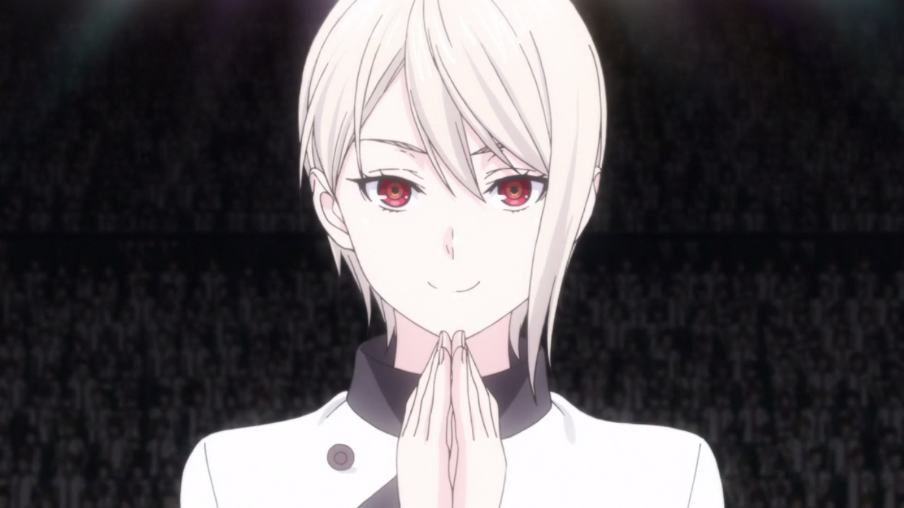

Alice Nakiri
About Alice Nakiri:
Alice Nakiri is the current 6th seat in the Totsuki Council of 10.
She is also the daughter of Soe Nakiri and Leonora Nakiri and the maternal
cousin of Erina Nakiri.
Alice Nakiri is a 92nd Totsuki Generation student
Characteristics about Alice Nakiri:
Alice has short silver hair with a longer left bang that initially reaches
the bottom of her chin.
As a member of the prestigious Nakiri Family, Alice holds herself with high
regard due to her pedigree.
As an expert in the field of molecular gastronomy, Alice highly values not only
the culinary aspect of cooking but the artisan aspects as well.
To Alice, to be a successful chef in the modern world, a chef must exercise both
of these traits to the highest potential.
As such, her cooking reflects this, showing the true artistry and beauty behind the
ingredients that makes up her dishes.